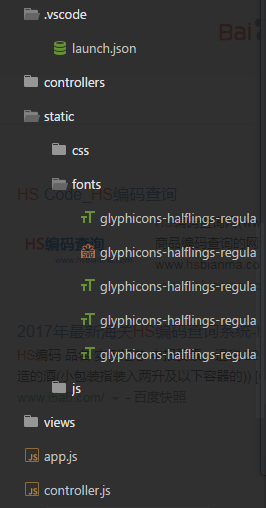
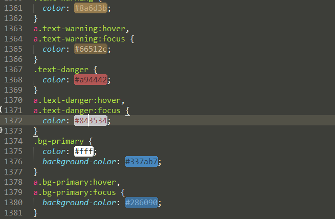
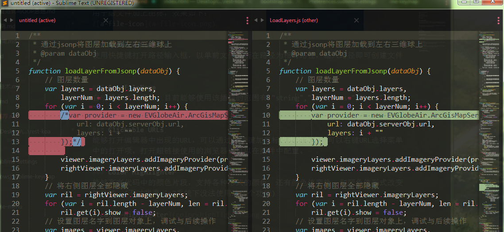
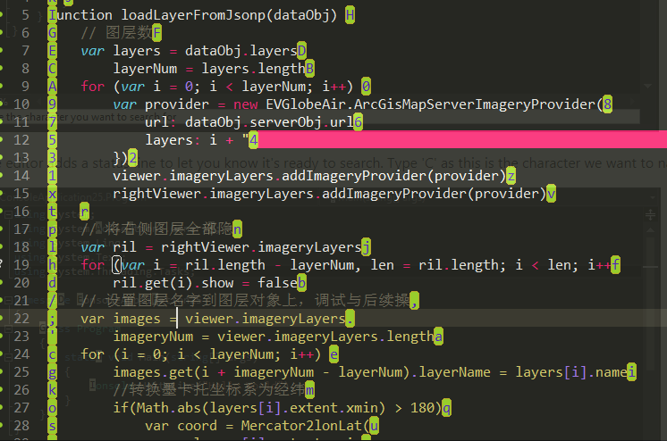
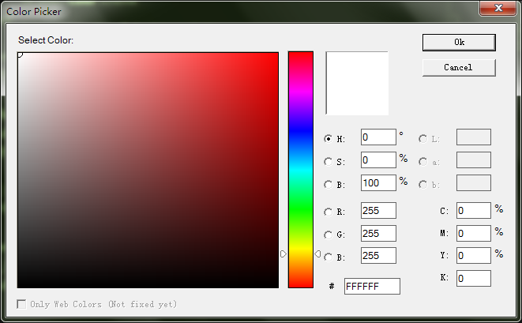
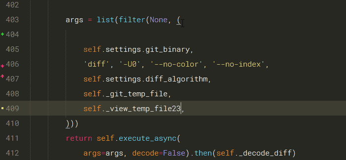

Sublime插件推荐
Sublime Text 是前Google工程师John Skinner编写的一个编辑器。虽然这个编辑器是闭源且收费(可以无限期试用)，但是因为这个编辑器强大的功能和美丽的外观，吸引了许许多多的用户，并为其构建了许多强大的插件。
通用
A File Icon
用于给文件加上图标，效果如下：

AdvancedNewFile
使用快捷键打开路径输入框，以单前文件夹所在路径为相对路径，输入路径即可创建文件。
AutoFileName
自动提示文件路径，目前能够使用该插件的范围有:”string”,”css”,”sass”,”less”,”scss”
Clickable URLs
能够打开编辑器中出现的URL，可以通过快捷键加鼠标点击的方式、可以右键URL选择菜单中的打开项。打开超链接使用的浏览器也可以在插件中配置。
Color Highlighter
能够高亮代码中的颜色片段，支持各种形式的颜色，还有颜色值变换，和颜色值形式改变的功能。(不过我再win7系统下没法使用这两个功能)

Compare Side-By-Side
比较两个文本不同之处的插件

EasyMotion
跳转到特定位置，默认情况
ctrl+;+任意字符，出现跳转标记，点击标记对应按键，跳转到对应位置ctrl+;+enter,跳转到某一行的行首或行尾
个人感觉还是sublime自带的vim模式好用点

EditorConfig
根据.editorconfig文件配置的代码风格，来设置sublime中的编码风格。
Insert Nums
插入递增序列，可以是递增数字，也可以是字母。
SideBar Folder
安装后，Sublime菜单栏上会多出一个Folders项，用于管理文件夹和文件夹使用的记录。安装了该插件后sublime可以打开多个文件夹。
zeal
在sublime中快速唤出zeal查看API文档
ConvertToUTF8
可以打开Sublime不支持的编码格式（如：GBK、GB2312、BIG5），也可以将文件保存成这些格式。
ColorPicker
打开颜色选择器选择颜色后会以HEX的格式输出颜色值。

SublimeTextTrans
将sublime的背景设置为透明
Terminal
在sublime中直接打开终端，可以定位到文件所在的位置。
SublimeREPL
能够在sublime中使用REPL，包括:Python、Ruby、NodeJS等各种语言的REPL。
Themr
主题选择器，能够设置主题为最爱主题Add current theme to favorites，还能够随机选择主题。
ctrl+f5全部主题ctrl+shift+f5最喜欢的主题
All Autocomplete
从所有打开的页面中查找匹配的词得出智能提示，sublime默认只从当前页面查找匹配词，生成智能提示。
Markdown相关
Markdown Editing
为编写markdown添加更好的主题、更全面的语法支持、以及一些有用的特性（snippet、快捷键等）
OmniMarkupPreview
提供实时markdown文档的实时预览功能，还能生成HTML文档。
Table Editor
用于快速生成表格，在第一行确定了表格的列数后，可以使用Tab键快速的跳转到表格的单元或生成行。
GitHub相关
Gist
用于设置和添加gist上的代码片段，需要给gist设置对应的token，并给予权限。这个插件不足之处是只能获得gist上的文件单元内的所有文件，而不能一个一个文件获取。
GitGutter
根据保存在git中的文件状态给文件中的每一行添加标志。

前端
Sublime Better Completion
智能提示插件，支持许多语言包括jQuery、JS、html、css、bootstrap等
DocBlockr
不仅能够生成类似Java语言的注释，而且还能自定义定义注释的格式。
Emmet
使得sublime支持emmet语法
Autoprefixer
根据CSS属性自动生成浏览器前缀
HTML/CSS/JS Prettify
HTML、CSS、JS、JSON等代码格式化插件
LiveReload
检测文件变化自动刷新页面
使用这个插件还需要配合上浏览器的扩展LiveReload扩展
然后给插件添加如下配置1
2
3
4
5
6{
"enabled_plugins": [
"SimpleReloadPlugin",
"SimpleRefresh"
]
}
打开要监听的页面，点击浏览器扩展空心圆变成了实心圆，即可正常监听。
LiveStyle
使得浏览器与编辑器中样式的修改能够同步，需要安装Emmet LiveStyle插件
chrome浏览器中的工作空间能实现类似的效果
SublimeLinter
用于检测文件语法是否规范，这是linter的管理器，如果想对某一种语言实行语法检查，还需要下载对应的linter和nodejs中对应的模块。
js:SublimeLinter-jshint、SublimeLinter-contrib-eslint 分别对应：jshint、eslint模块
css:SublimeLinter-csslint 对应 csslint 模块
html:SublimeLinter-htmlhint 对应 htmlhint 模块
Python
Anaconda
提供高效的开发环境，只此一个插件就能将sublime打造为python IDE。该插件提供了自动完成，API说明，重构，McCode代码复杂性检测，lint，自动格式化等功能。
SublimeLinter-pep8
python语法检测插件配合sublimelinter使用，同时还需要使用pip安装pep8
[sudo] pip-3.x install pep8
Python Pep8 AutoFormat
根据pep8编码规范，自动格式化。除了使用快捷键方式格式化外，还可以设置为保存的时候自动格式化。
React
react-native-snippets
react native代码片段插件，可生成的代码片段包括生命周期函数、快速定义组件、快速设置状态等。
react-native-css-snippets
react native样式提示插件，能够快速生成样式